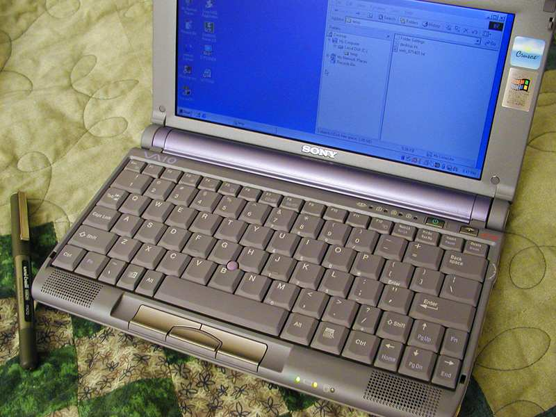
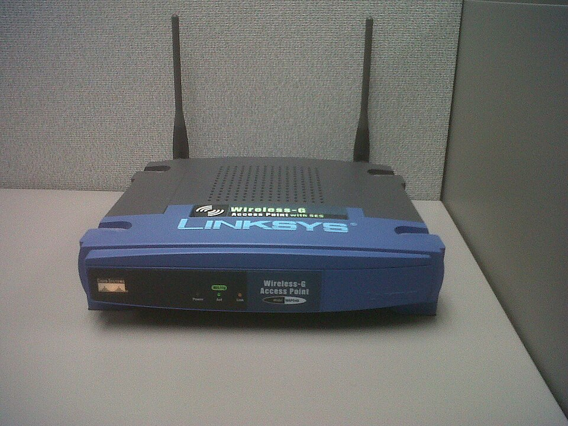

REDES DE DATOS · ITS N.º 3
La capa física
del modelo OSI
Ismael Muñoz
Exposición oral · Redes de Datos
01 / LA PREGUNTA · 1 MIN
La capa física del modelo OSI
Si mando el mismo PDF desde la notebook por cable y desde el celular por Wi-Fi, ¿qué cambia en el primer tramo del viaje?
El mismo archivo. Dos primeros enlaces. Guardemos la respuesta para el final.
02 / EL RECORRIDO · 2 MIN
De la trama a la señal

EmisorCapa 2 · Trama

ReceptorLa capa 1 transmite y recupera bits mediante señales.
03 / LA MESA DE MEDIOS · 2 MIN · 30 S POR MEDIO
Los bits son los mismos. El medio cambia.
100 Mb/s = 100 millones de bits por segundo
04 / ENLACES DISTINTOS · 2 MIN
La capa física en mi casa
Elegí la ASUS, el iPhone o la antena para destacar su enlace.
El Wi-Fi de casa y la radio al satélite son enlaces distintos.
Fotos representativas de los equipos; conexiones simplificadas.05 / LA RESPUESTA · 1 MIN
Volvamos al mismo PDF
Por cable o por Wi-Fi, ¿qué cambia en el primer tramo del viaje?
Primero, escuchamos al curso.
Cambia el medio. La capa física sigue transmitiendo bits.
ISMAEL MUÑOZ · ITS N.º 3
Muchas gracias
por su atención
FIN